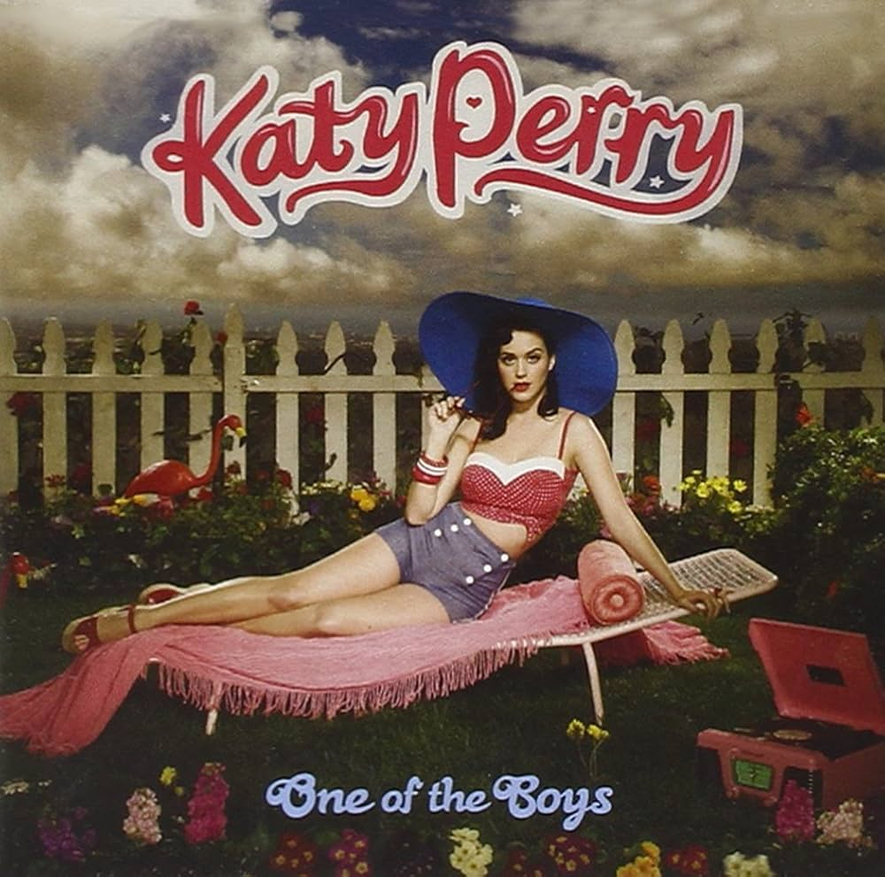

Teenage Dream
Fue lanzado el 24 de 2010
Descripción: El álbum es el segundo álbum en la historia en tener cinco sencillos número uno (después del
álbum Bad de Michael Jackson de 1987 ) encabezando la lista Billboard Hot 100 de EE. UU. , y el primero de
una mujer en lograr este hito..
- The One That Got Away
- Teenage Dream
- Last Friday Night

One of the Boys
2008
Descripción: El "álbum debut". One of the Boys es el primer álbum de Perry bajo el nombre artístico de Katy
Perry, One of the Boys recibió una recepción mixta por parte de la crítica: algunos lo consideraron lleno de
"éxitos potenciales" y otros criticaron el material que percibieron como débil.
- I Kissed a Girl
- I'm Think I'm Ready
- Lost
Hot N Cold
2008
Descripción:Hot n Cold encabezó las listas de éxitos en quince países, incluyendo Estados Unidos, Reino
Unido, Australia, Irlanda, Alemania y Nueva Zelanda. También figura en el Libro Guinness de los Récords
Mundiales como la canción más descargada de una artista femenina.
- That´s Not My Name
- California Girls
- Hot N Cold